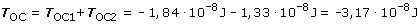

Cuando el campo gravitatorio es creado por una distribución de masas, el trabajo es la suma numérica de los trabajos realizados por los campos de cada masa (Principio de superposición), por tanto hay que calcular el trabajo que hacen por separado los campos gravitatorios de M1 y M2 sobre la masa de 10 kg cuando se desplaza desde O hasta C.
|
|
|


Un trabajo negativo significa que la masa m no irá sola desde O hasta C, habrá que llevarla (Y nos costará un trabajo de 3,17·10-8 J) o lanzarla con una energía cinética miníma de 3.17·10-8 J